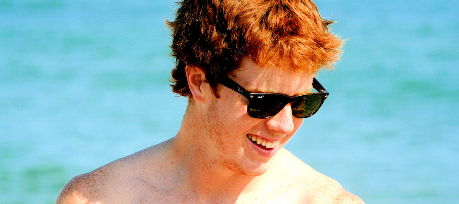

I am a current MD/MBA candidate at the University of Rochester interested in emerging technologies in the healthcare industry. I studied biochemistry and computer science during undergrad and want to be where these two fields intersect. I did my undergraduate thesis on the synthesis and functionalization of gold nanoparticles and have experience processing and analyzing next-gen sequencing data with tools such as Bowtie, Tophat, and Cufflinks.
My other interests include entrepreneurship and athletics. I founded a clothing and lifestyle brand my freshman year in college which I continue to run (www.goodeesclothing) and played 4 years of varsity lacrosse as well as intramural basketball and football.
Education
University of Rochester (MD/MBA)
MD - UR Medical School (Class of 2019)
MBA - Simon Business School (Class of 2016)
MBA - Simon Business School (Class of 2016)
Middlebury College (Class of 2014)
BA - Biochemistry and Computer Science
Summa Cum Laude
Summa Cum Laude
St. Mark's School (Class of 2010)
Cum Laude Society
Experience
Bioinformatics Research Technician
Ward Lab, Middlebury College | Summer 2014
Researcher in Biochemistry and Molecular Pharmacology Department
Han Lab, UMass Medical School | Summer 2013
Clinical Research Assistant in the Emergency Department
UMass Medical School | Summer 2012
Cell Biology Summer Researcher
Fanning Lab, UMass Medical School | Summer 2011